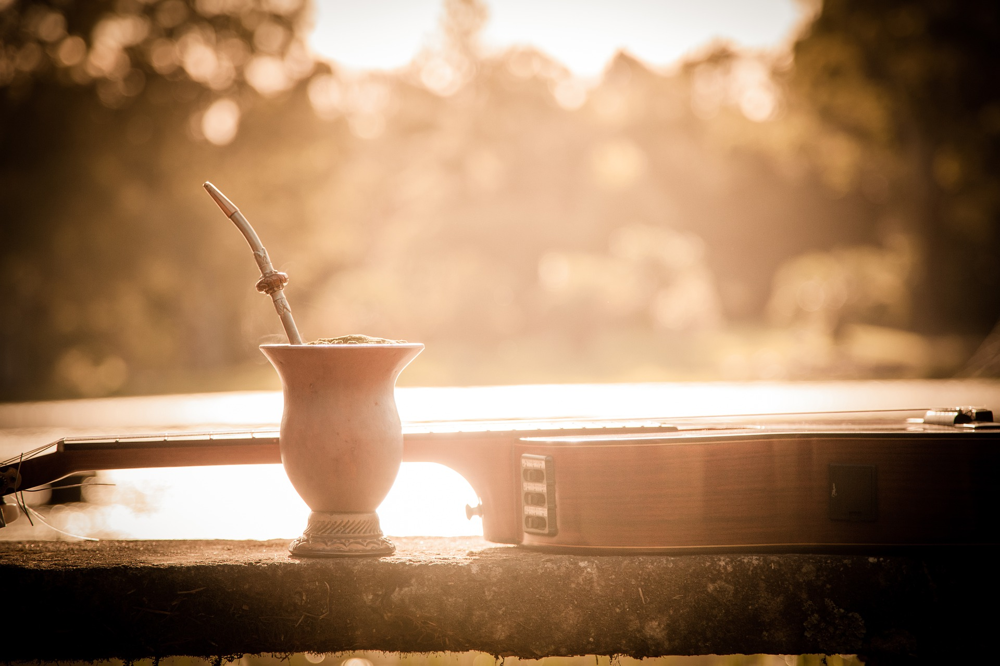

Sobre Nosotros

Esta página pretende ser un ejercicio sobre como construir un sitio web estilo blog estático. Fue desarrollado en base al seguimiento de un curso online, utilizando muchos de sus recursos y a la vez cambiendo su tematica y varios de sus aspectos para tornarse en algo original. Al ser yo argentino, me pareció buena idea realizarlo acerca de nuestra bebida nacional, la cuál hace que esté hoy mismo escribiendo esto, en horas bastante avanzadas, ayudandome a mantener la lucidez y concentración. Espero sea de su agrado.
La mayoría de los textos, imágenes y demás recursos, fueron tomados de los siguientes sitios: